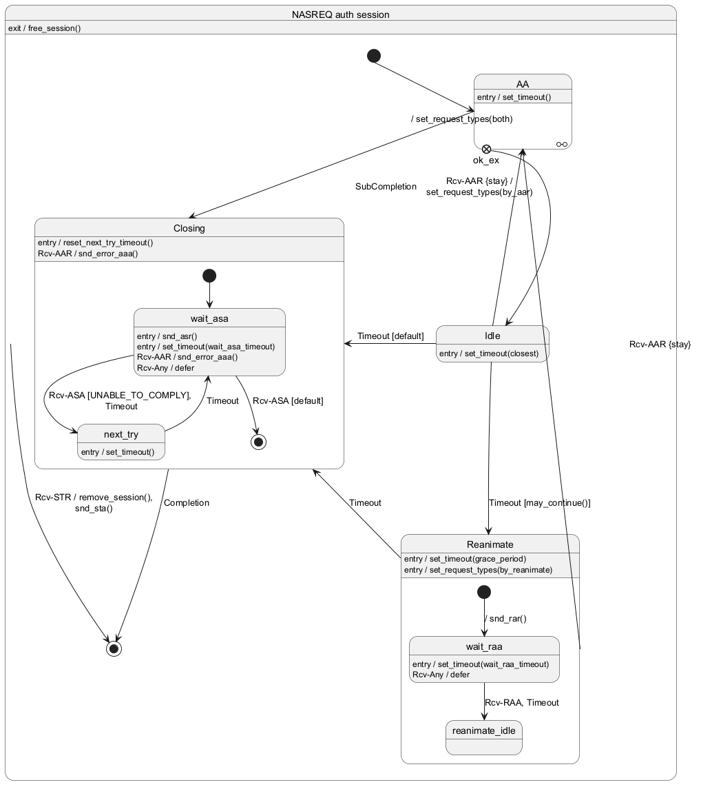

@startuml
set separator none
state "NASREQ auth session" as nasreq_auth {
nasreq_auth: exit / free_session()
nasreq_auth --> [*]: Rcv-STR / remove_session(),\nsnd_sta()
[*] --> AA: / set_request_types(both)
State AA <<O-O>>
state AA {
AA: entry / set_timeout()
state "ok_ex" as aa_ok_ex <<exitpoint>>
}
AA --> Closing: SubCompletion
aa_ok_ex --> Idle
state Idle {
Idle: entry / set_timeout(closest)
}
Idle --> AA: Rcv-AAR {stay} /\nset_request_types(by_aar)
Idle --> Reanimate: Timeout [may_continue()]
Idle -left-> Closing: Timeout [default]
state Reanimate {
Reanimate: entry / set_timeout(grace_period)
Reanimate: entry / set_request_types(by_reanimate)
[*] --> wait_raa: / snd_rar()
state wait_raa {
wait_raa: entry / set_timeout(wait_raa_timeout)
wait_raa: Rcv-Any / defer
}
wait_raa --> reanimate_idle: Rcv-RAA, Timeout
}
Reanimate -left-> AA: Rcv-AAR {stay}
Reanimate --> Closing: Timeout
state Closing {
Closing: entry / reset_next_try_timeout()
Closing: Rcv-AAR / snd_error_aaa()
[*] --> wait_asa
state wait_asa {
wait_asa: entry / snd_asr()
wait_asa: entry / set_timeout(wait_asa_timeout)
wait_asa: Rcv-AAR / snd_error_aaa()
wait_asa: Rcv-Any / defer
}
wait_asa --> next_try: Rcv-ASA [UNABLE_TO_COMPLY], \nTimeout
wait_asa --> [*]: Rcv-ASA [default]
state next_try {
next_try: entry / set_timeout()
}
next_try --> wait_asa: Timeout
}
Closing --> [*]: Completion
}
@enduml